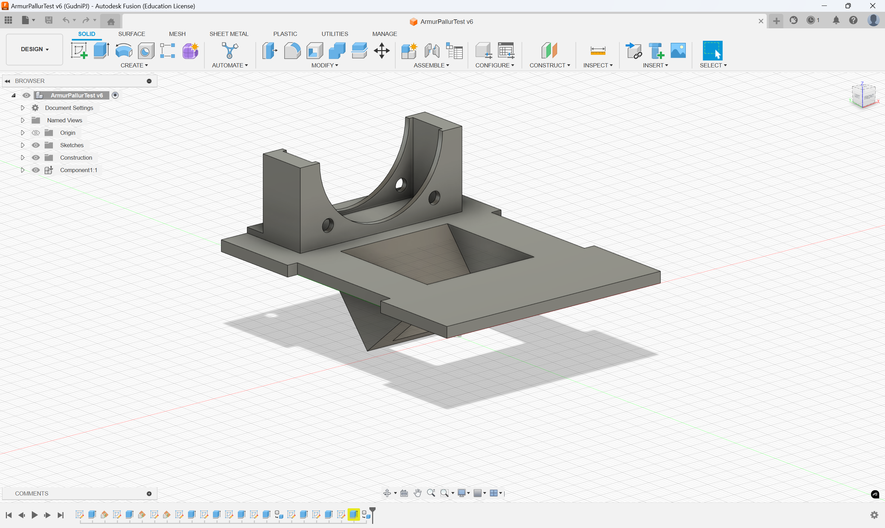

3D prentun og skönnun
3D prentun
Í þessu verkefni var markmiðið að kanna þá framleiðslumöguleika sem þrívíddar prentun býður upp á. Þrívíddarprentun býr upp á allskyns möguleika sem fræsing (eða aðrar subtractive manufacture aðferðir) býður ekki upp á. Þar helst er kannski möguleikinn að gera hlutina hola að innan sem getur sparað þyngd án mikilla tapa í burðarþoli. 3D prentun býður einnig upp á að framleiða óhefbundin form á einfaldari máta en t.d. steypisprautun eða sambærilegar aðferðir. Á móti kemur að 3D prentaðir íhlutir henta stundum verr þar sem yfirborð þeirra er ekki eins rennislétt og fæst með því að renna eða fræsa íhlutinn og því þarf stundum að blanda framleiðsluaðferðum til að fá góða lokavöru.
Hönnun og val
Samhliða þessum áfanga er ég að taka áfangann VÉL205M - Tölvustýrður Vélbúnaður og á þeim tíma sem þetta verkefni stóð yfir var annað verkefni í honum þar sem átti að hanna og smíða súpuróbot. Í því verkefni þurfti að 3D prenta þó nókkra íhluti eins og tannhjól og öxla. Til að spara bæði tíma, vinnu og efni ákvað ég að nota einn af þeim íhlutum í þetta verkefni. Í raun eru þetta tveir hlutir sem voru skrúfaðir saman en hefðu getað verið einn hlutur. Um er að ræða pall sem hélt viftu og litanema sem áttu að litgreina og kæla súpuna. Búinn var til flatur pallur með hólfi sem sneri um 40 gráður til að litaneminn gæti greint súpuna ofan í skálinni þar sem hann yrði aldrei staðsettur beint yfir skálinni. Ofan á þennan pall var svo festur annar íhlutur til að halda viftu sem var einnig 3D prentaður. Upprunalega átti að prenta allt saman svo ekki þurfti að skrúfa neitt saman en ljóst var að það yðri einfaldara að prenta hlutina í sitthvoru lagi þar sem annars hefði þurft mikið af stoðum til að halda pallinum uppi sem hefði sóað efni og farið illa með yfirborðsáferðina.
Prentunarpróf
Þar sem pallurinn átti að passa press-fit inn í göt í armi vélmennisins var lang mikilvægast að vita hversu mikið efnið myndi þenjast út eða skreppa saman í prentuninni. Því ákvað ég að útbúa próf sem skoðaði hvernig mismunandi form myndu þenjast út. Skoðaðir voru kassar, hringir og plúsar æi mismunandi stærðum til að athuga hvort stærð formsins hefði áhrif. Prófið reyndist ekki vera neitt sérstaklega hjálplegt þar sem það ver með lítið infill (15%) en þar sem pallurinn var nokkuð þunnur var hann í raun gegnheill og því gaf prófið engar gagnlegar upplýsingar.
Prentun
Þegar búið var að útbúa módel í Fusion þurfti að koma þeim á form sem prestarinn getur notað. Til að byrja með þurfti að hala niður Prusa Slicer forritinu og velja viðeigandi stillingar við uppsetningu. Við uppsetningu studdist ég við myndband Hafliða um hvernig á að nota Prusa Slicer. Þá þurfti að yfirfæra módelin yfir í Prusa Slicer til að undirbúa þau tli prentunar. Úr Fusion þurfti að exporta módelunum sem .3mf skjali sem hægt var að draga inn í Prusa Slicer. Þetta ferli var allt nokkuð þæginlegt þar sem bæði prófið og báðir hlutarnir í pallinum sem átti að prenta höfðu stórar flatar hliðar svo ekki þurfti að nota stoðir (e. supports) til að passa að prentið myndi ekki klikka. Eini hlutinn sem virtist mögulega varasamur var hólfið sem átti að halda litanemanum en hallinn var það lítill að ég taldi ekki þurfa stoðir þar heldur. Því þurfti ekki að gera neitt merkilegt inni í Prusa Slicer nema að velja hliðina sem sem átti að prenta frá. Næst ýtir maður á 'Slice now' til að fá planið sem 3D prentarinn fylgir. Þegar allt ver tilbúið var g-code skráin færð yfir á SD-kort sem prentarinn notar til að geyma skrár og næsta skref var þá bara að prenta. Til að prenta þarf að undirbúa prentarann en hann byrjar á að hita sig nógu mikið til að geta brætt plastið. Einnig er botnplatan hituð upp í 60°C. Áður en prentun hófst þurfti einnig að bera efni á plötuna til að auðvelda losun frá plötunni þegar prentinu væri lokið.
Lokaniðurstaða kom nokkuð vel út en efnisþykktin var örlítið of stór svo sanda þurfti talsvert í kringum press-fit fingurna til að koma þeim inn í arma vélmennisins. Einnig var staðsetning og halli á litanema hólfinu ekki rétt en það var leyst eftirá. Myndir af pallinum í arminum má sjá hér að neðan.
3D skönnun
Til að 3D skanna byrjaði ég á að hlaða niður Scaniverse appinu sem leyfir manni að skenna með símanum sínum. Ég ákvað að skanna Rubiks kubb sem er á skrifborðinu mínu. Til að skanna fylgdi ég einfaldlega skrefunum sem appið leggur fyrir en ferlið er nokkuð einfalt. Skannið má finna hér. Skannið kom nokkuð vel út þó að það hafi ekki verið neitt meiriháttar nákvæmt en það stafar líklega af því að síminn minn er ekkert sérstaklega nýlegur og er ekki með innbygt LIDAR í myndavélinni.